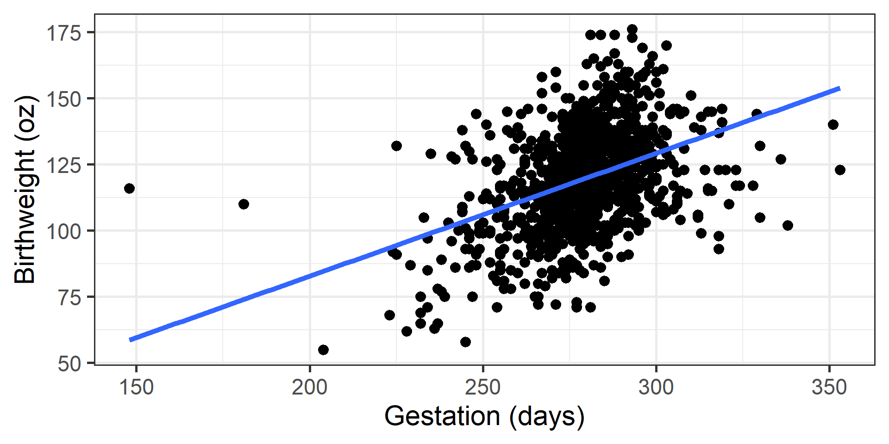
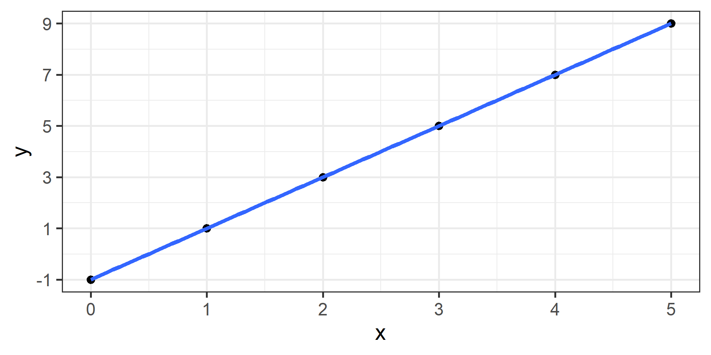
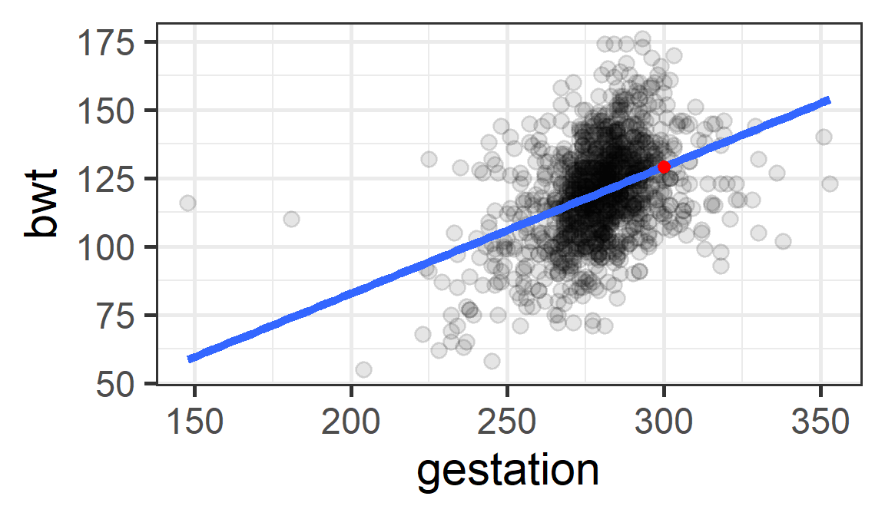
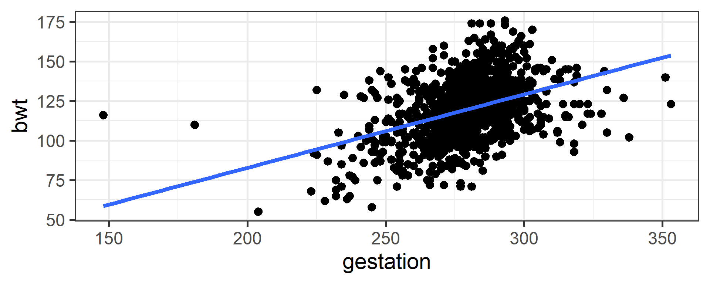
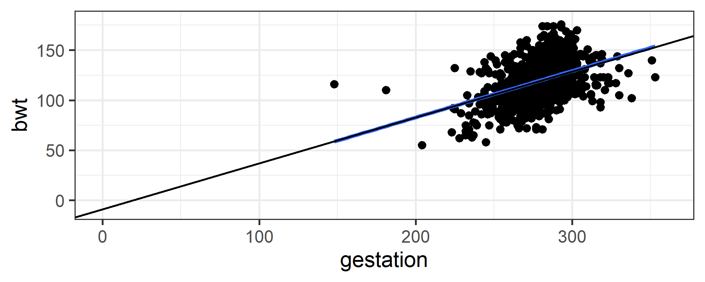
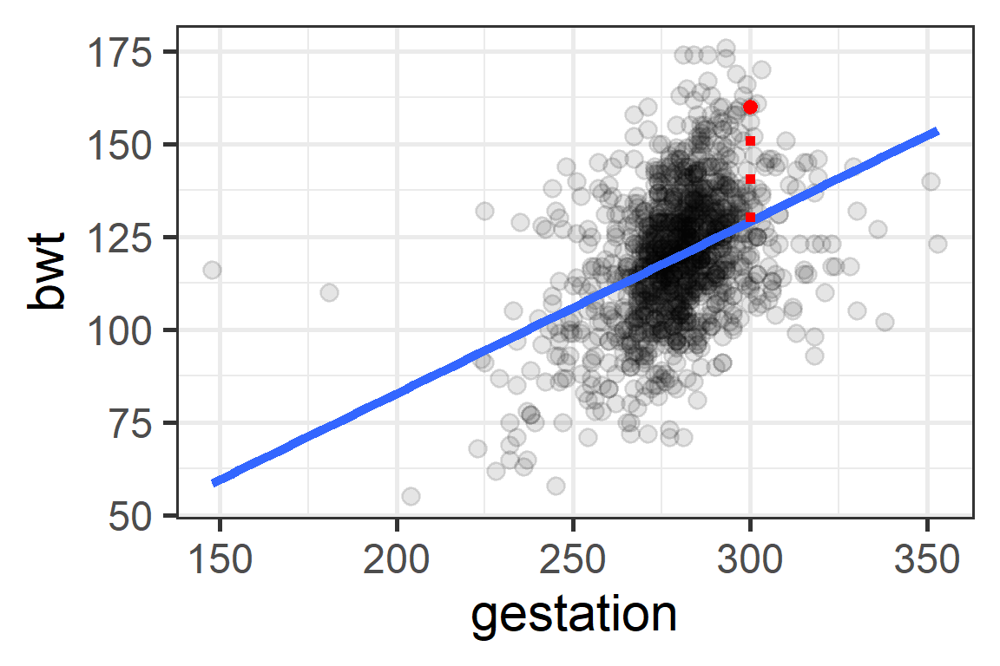

Rows: 1,223
Columns: 8
$ case <int> 1, 2, 3, 5, 6, 7, 8, 9, 10, 11, 12, 13, 14, 15, 16, 17, 18, …
$ bwt <int> 120, 113, 128, 108, 136, 138, 132, 120, 143, 140, 144, 141, …
$ gestation <int> 284, 282, 279, 282, 286, 244, 245, 289, 299, 351, 282, 279, …
$ parity <int> 0, 0, 0, 0, 0, 0, 0, 0, 0, 0, 0, 0, 0, 0, 0, 0, 0, 0, 0, 0, …
$ age <int> 27, 33, 28, 23, 25, 33, 23, 25, 30, 27, 32, 23, 36, 30, 38, …
$ height <int> 62, 64, 64, 67, 62, 62, 65, 62, 66, 68, 64, 63, 61, 63, 63, …
$ weight <int> 100, 135, 115, 125, 93, 178, 140, 125, 136, 120, 124, 128, 9…
$ smoke <int> 0, 0, 1, 1, 0, 0, 0, 0, 1, 0, 1, 1, 1, 0, 0, 1, 1, 0, 1, 0, …Data 200: Lecture 8
Introduction to Machine Learning: Simple linear regression
Medina - CSU Channel Islands
Machine learning
Machine learning = Methods that use algorithms to learn patterns from data and make predictions
- Simple linear regression is one example of a machine learning method
Data babies in openintro package
Baby Weights
Baby Weights

lm stands for linear model
se stands for standard error
Baby Weights

The line is our “model”. If we can describe a phenomena (e.g., relationship between birth weight and gestation) with a model, we can use that model
- to describe relationships
- to predict future values
Notation
| Variable | Symbol | Relationship | Type |
|---|---|---|---|
| Birth weight | y | Response | Numeric |
| Gestation | x | Explanatory | Numeric |
How do we get and use the line?
Linear Equations Review
Recall from your previous math classes
\(y = mx + b\)
where \(m\) is the slope and \(b\) is the y-intercept
e.g. \(y = 2x -1\)

Linear model
Math class
\(y = b + mx\)
- \(b\) is y-intercept
- \(m\) is slope
Data science class
\(y_i = b_0 +b_1x_i + \epsilon_i\)
- \(b_0\) is y-intercept
- \(b_1\) is slope
- \(\epsilon_i\) is leftover variation / unexplained randomness
- \(i = 1, 2, ...n\) identifier for each point
Linear model
Data science class
\(y_i = b_0 +b_1x_i + \epsilon_i\)
- \(b_0\) is y-intercept
- \(b_1\) is slope
- \(\epsilon_i\) is leftover variation / unexplained randomness
- \(i = 1, 2, ...n\) identifier for each point
Note \(y_i = b_0 +b_1x_i + \epsilon_i\) is the theoretical model.
- In reality we don’t have data for everything / everyone we want to learn about, so we use a sample to get estimates for \(b_0\) and \(b_1\).
How to fit a linear model with R
- the
lm()function fits a linear model, often called regression. lmstands for linear model.- Note that the variables are entered in y ~ x order, where we think x eXplains y
Model output
# A tibble: 2 × 5
term estimate std.error statistic p.value
<chr> <dbl> <dbl> <dbl> <dbl>
1 (Intercept) -10.1 8.32 -1.21 2.27e- 1
2 gestation 0.464 0.0297 15.6 3.22e-50Estimated model (general form):
\(\hat {y}_i = \hat{b}_0 + \hat{b}_1 x_i\) <- The hat means it is an estimate!
Estimated model (context specific):
\(\widehat{\text{Birth Weight}_i} = -10.1 + 0.464\text{ gestation}_i\)
We can use our model for prediction!
Predicted birth weight for a baby with 300 days of gestation
\[\begin{equation*} \begin{split} \widehat{\text{Birth Weight}_i} &= -10.1 + 0.464\text{ gestation}_i\\ &= -10.1 + 0.464 (300)\\ &=129.1 \end{split} \end{equation*}\]
For a baby with 300 days of gestation the predicted birth weight is 129.1 ounces.
Predicted birth weight for a baby with 300 days of gestation
1
129.2146 
Interpretation of estimates: general
\(\hat{b}_0\) is the predicted/expected \(Y\) value when \(X = 0\).
\(\hat{b}_1\) is the difference in predicted/expected \(Y\) value associated with a 1 unit increase in \(X\)
Interpretation of estimates: in context

\(\hat{b}_1 = 0.464\) which means for one unit (day) increase in gestation period the expected increase in birth weight is 0.464 ounces.

\(\hat{b}_0 = -10.1\) which means for a gestation period of 0 days the expected birth weight is -10.1 ounces!!!!!!!! (does NOT make sense)
Extrapolation
- There is no such thing as 0 days of gestation.
- Birth weight cannot possibly be -10.1 ounces.
- Extrapolation happens when we use a model outside the range of the x-values that are observed. After all, we cannot really know how the model behaves (e.g. may be non-linear) outside of the scope of what we have observed.
Model Error
Baby number 148
Let’s consider a baby in our data and see how far/close the true birth weight is from the predicted birth weight.
Baby #148
Observed:
\[\text{Birth Weight}_{148} = 160\]
Predicted:
\[\begin{equation*} \begin{split} \widehat{\text{Birth Weight}_i} &= -10.1 + 0.464\text{ gestation}_i\\ &= -10.1 + 0.464 (300)\\ &=129.1 \end{split} \end{equation*}\]
Residual for i = 148

\(\text{Birth Weight}_{148} = 160\)
\(\widehat{\text{Birth Weight}}_{148} = 129.1\)
Residual:
\(e_{i} = y_{i} - \hat y_{i}\)
\(e_{148} =\) 160 - 129.1 = 30.9
Least Squares Regression
There are different ways we could have fit a line to our data, we choose the one (\(\hat{b}_0\) and \(\hat{b}_1\)) that minimizes the sum of squared residuals (\(e_i = y_{i} - \hat y_{i}\)):
\[e_1^2 + e_2^2 + ... + e_n^2\]
Why didn’t we choose to minimize
\[e_1 + e_2 + ... + e_n?\]
Prediction Error
Root Mean Squared Error (RMSE) can be thought of as “average error” of our model
\[RMSE = \sqrt{(e_1^2 + e_2^2 + ... + e_n^2) / n},\] with \(e_i = y_{i} - \hat y_{i}\).
- Minimum value for RMSE is 0
- RMSE is in the same units as your \(Y\) variable
Computing residuals
# A tibble: 1,223 × 4
gestation bwt pred resid
<int> <int> <dbl> <dbl>
1 284 120 122. -1.79
2 282 113 121. -7.86
3 279 128 119. 8.53
4 282 108 121. -12.9
5 286 136 123. 13.3
6 244 138 103. 34.8
7 245 132 104. 28.3
8 289 120 124. -4.11
9 299 143 129. 14.2
10 351 140 153. -12.9
# ℹ 1,213 more rowsComputing RMSE
[1] 16.6512Our linear model’s RMSE is 16.65 oz.
Maybe weight of the mother would better predict baby birth weight… We could fit both linear models and compare prediction error!